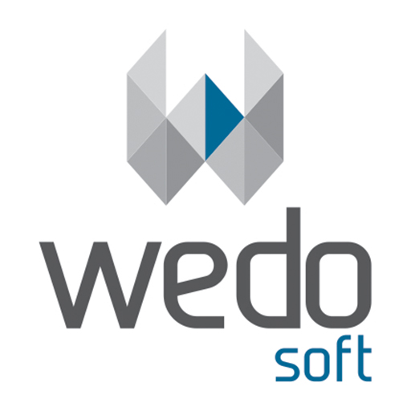

Exemplos de desencolvimento Android
Graduado em Sistemas de Informação em 2011 pelo Centro Universitário Barriga Verde - Unibave, com especialização em Engenharia e Arquitetura de Software em 2015 pela Universidade Estácio e atualmente mestrando no programa de Pós-Graduação em Tecnologias da Informação e Comunicação na Universidade Federal de Santa Catarina, exerce a profissão de Analista de Sistemas e Administrador de Banco de Dados além de responsável pelo gerenciamento do time de desenvolvimento de softwares na instituição em que trabalha.
Possui também experiência em desenvolvimento de aplicativos Android, já tendo desenvolvido aplicativos pessoais e comerciais para empresa privada onde dois dos aplicativos pessoais desenvolvidos estão publicados na Play Store e na Loja da Positivo.
Sempre preocupado em acompanhar as tecnologias, está frequentemente participando de cursos e palestras de tecnologia e metodologias ágeis com objetivo de aprimorar cada vez mais suas habilidades profissionais e pessoais. Se vê como uma pessoa calma, responsável e organizada, e nas horas vagas gosta de tirar fotografias e praticar exercícios físicos.
Nesta exemplo foram apresentados como usar uma Activity e Intent, passar parâmetros entre telas
e fazer chamadas a recursos do dispositivo.
Professor: Rodolfo Faquin Della Justina
Local: Centro Universitário Barriga Verde - UNIBAVE - Rua Pe. João Leonir Dall'Alba, 601 - Bairro Murialdo - Orleans - SC
